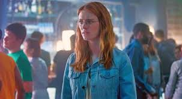

Lacie es la protagonista del episodio "Nosedive" de la serie Black Mirror. Es una joven obsesionada con su imagen
y su estatus social, y vive en un mundo donde las personas pueden calificar a otras
Yorkie es la protagonista del episodio "San Junipero" de la serie Black Mirror. Es una joven tímida y reservada que vive en un mundo virtual donde las personas pueden vivir para siempre después de la muerte.
